화공기사(구)(구) (2004-03-07 기출문제)
1과목: 화공열역학
1. 다음 중 기체 상수 값으로 틀린 것은?
- 1.987cal/gmole K
- 62.37㎜Hg/gmole K
- 7.3atm-ft3/lbmole0R
- 10.73psi ft3/lbmole0R
(정답률: 알수없음)

2. 여름철에 집안에 있는 부엌을 시원하게 하기 위하여 부엌의 문을 닫아 부엌을 열적으로 집안의 다른부분과 격리하고 전기냉장고의 문을 열어놓았다. 이 부엌의 온도는?
- 온도가 내려간다.
- 온도의 변화는 없다.
- 온도는 처음에 내려갔다가 다시 올라간다.
- 온도는 올라간다.
(정답률: 알수없음)
3. 1기압 100℃의 액체 상태의 물은 그 내부에너지가 418.94Joule/g이다. 이 조건에서 물의 비용은 1.0435㎝3/g이다. 엔탈피는 몇Joule/g인가?
- 410.38
- 413.83
- 416.94
- 419.⑤
(정답률: 알수없음)
4. 단위몰의 이상기체가 그림과 같이 가역열기관 ㄱ, ㄴ이 있다. Ta,Tb곡선은 등온선이고, 2-3,5-6은 등압선이고, 3-1,6-4는 등용(isochores)선이면 열기관 ㄱ, ㄴ의 외부에 한 일(W)및 열량(Q)의 각각의 관계는?
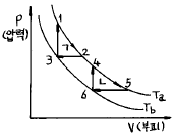
- Wㄱ = Wㄴ,Qㄱ > Qㄴ
- Wㄱ = Wㄴ,Qㄱ = Qㄴ
- Wㄱ > Wㄴ,Qㄱ = Qㄴ
- Wㄱ < Wㄴ,Qㄱ = Qㄴ
(정답률: 알수없음)
5. 다음 그림의 빗금친 부분이 가리키는 것은?
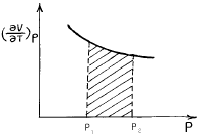
- Ω
- W
- Δ S
- Δ H
(정답률: 알수없음)
6. 1atm, 357℃의 이상기체 1㏖을 가열하여 10atm으로 압축하였을 때의 entropy 변화량은 얼마인가? (단, 기체는 단원자 분자이다.)
- -4.58㎈/㏖ㆍK
- 4.58㎈/㏖ㆍK
- -0.46㎈/㏖ㆍK
- 0.46㎈/㏖ㆍK
(정답률: 알수없음)
7. 고립계의 총 엔트로피의 증가와 관련이 없는 것은?
- 넓은 의미로서 안정도와 확율이 증가되는 것
- 좁은 의미로서 볼 때 더욱 무질서해진다는 것
- 열이 일로 전환할 때 일부가 열의 형태로 고립계에 축적된다는 것
- 열이 일로 가역적으로 전환 된다는 뜻
(정답률: 알수없음)
8. 열역학 제2법칙에 관한 표현 중 틀린 것은?
- 고립계로 생각되는 이 우주의 엔트로피는 계속 증가한다.
- 이 우주내에 있어서의 일로 이용 될수 있는 에너지는 점차로 감소한다.
- 열이 고온부로부터 저온부로 옮기는 현상은 비가역적인 현상이다.
- 일이 열로 변하는 현상은 가역적이라고 할 수 있다.
(정답률: 알수없음)
9. 다음 중 맥스웰(Maxwell)의 관계식으로 적당하지 않은 것은?
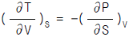
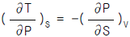
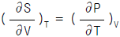
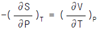
(정답률: 알수없음)
10. Carnot cycle에서 P-V도표 중 옳은 것은?
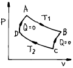
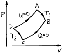
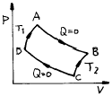
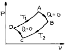
(정답률: 알수없음)
11. 도표상의 점 A에서 액화할 수 없는 공정은?
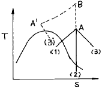
- A - (1)
- A - (2)
- A - (3)
- A - B - A' - (3')
(정답률: 알수없음)
12. 화학 포텐샬(chemical potential)의 정의가 아닌 것은?
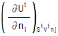
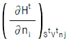
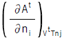
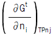
(정답률: 알수없음)
13. 다음 열역학성질중 부분몰성질(partial molar property)
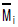
에 해당하지 않는 것은?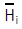
(H는 엔탈피)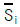
(S는 엔트로피)- fi (f는 퓨개시티)
- lnγ i ( γ 는 활동도계수)
(정답률: 알수없음)
14. 잘 섞이는 두 개의 성분이 기액평형에서 공비물로 존재하지만 반응을 하지 않는 계에 대한 자유도는 얼마인가?
- 1
- 2
- 3
- 4
(정답률: 알수없음)
15. 공기를 180K 의 온도에서 100bar 의 압력으로 저장하려 한다. 저장탱크의 부피가 1m3 이라면 저장할 수 있는 공기의 질량은? (단, 같은 조건에서 공기의 압축인자는 0.708이며 평균분자량은 29이다.)
- 264kg
- 274kg
- 284kg
- 294kg
(정답률: 알수없음)
16. 800kPa , 240℃의 과열수증기가 노즐을 통하여 150kPa 까지 가역적으로 단열팽창된다. 노즐 출구에서 상태는? (단 800kPa , 240℃에서 과열수증기의 엔트로피는 6.9976kJ /kgㆍ K 이고 150kPa 에서 포화액체(물)와 포화 수증기의 엔트로피는 각각 1.4336kJ /kgㆍ K 와 7.2234kJ /kgㆍ K 이다.)
- 과열수증기
- 포화수증기
- 증기와 액체혼합물
- 과냉각액체
(정답률: 알수없음)
17. 이상기체의 단열과정에서 온도와 압력에 관계된 식이다. 바르게 나타낸 것은? (단, 열용량비γ =
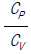
이다.)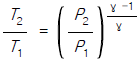
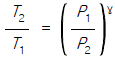
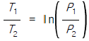
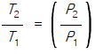
(정답률: 알수없음)
18. 역학적으로 가역인 비흐름과정에 대하여 이상기체의 폴리트로픽 과정(Polytropic process)은 PVn이 일정하게 유지되는 과정이다. 이 때 n값이 열용량비(또는 비열비)라면 어떤 과정인가?
- 단열과정(Adiabatic process)
- 정온과정(Isothermal process)
- 가역과정(Reversible process)
- 정압과정(Isobaric process)
(정답률: 알수없음)
19. 다음 중 가역과정의 엔트로피 변화량에 대하여 옳게 표현한 것은? (단, S=엔트로피, G=깁스 자유에너지, U=내부에너지, Q=열 이다)
- dS = TdP - PdV
- dS =
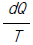
- dS =
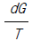
- dS = dU - PdV
(정답률: 알수없음)
20. 증기압축 냉동사이클의 냉매로 사용하기에 적절하지 않은 것은?
- 증발온도에서 냉매의 증기압은 대기압보다 높아야 한다.
- 응축온도에서 냉매의 증기압은 너무 높지 않아야한다
- 냉매의 증발열은 커야 한다.
- 냉매 증기의 비체적은 커야 한다.
(정답률: 알수없음)
2과목: 화학공업양론
21. 반경이 r이고 각도가 θ 인 회전력(τ )이 회전축을 통해 전달되는 에너지 전달속도의 표현식은? (단, ω 는 각속도이다.)
- τ ω
- (τ ω ) /2
- (τ ω )2
- (τ ω )2 /4
(정답률: 알수없음)
22. 1,000㎏/hr의 유속으로 벤젠과 톨루엔의 혼합용액이 유입 하여 (각각 50%식) 벤젠은 상층에서 450㎏/hr,톨루엔은 하층에서 475㎏/hr로 분리되고 있다. 상층에 섞여있는 톨루엔(q1,㎏/hr)과 하층에 섞여있는 벤젠(q2,㎏/hr)은 각각 얼마씩인가?
- q1 = 25㎏/hr, q2 = 50㎏/hr
- q1 = 50㎏/hr, q2 = 25㎏/hr
- q1 = 25㎏/hr, q2 = 25㎏/hr
- q1 = 50㎏/hr, q2 = 50㎏/hr
(정답률: 알수없음)
23. 크세논(원자량:131.3)은 12.4MPa, 320K에서 0.42의 압축인자를 갖는다. 이 조건에서 크세논의 비용(specitic volume, 단위 = m3/㎏)을 구하는 식은?
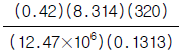
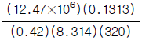
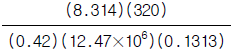
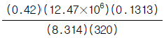
(정답률: 알수없음)
24. 1atm에서 포름알데히드 증기의 내부에너지
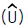
가 온도(t℃)의 함수인 (J/㏖) = 25.96t + 0.02134t2으로 표시될때 0℃에서 정용열용량은?- 13.38 J/㏖℃
- 17.64 J/㏖℃
- 21.42 J/㏖℃
- 25.96 J/㏖℃
(정답률: 알수없음)
25. 20L/min의 물이 아래와 같은 계에 흐를 때 ① 지점 에서 요구되는 압력은? (단, 마찰손실은 무시한다.)
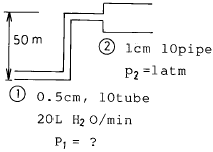
- 4.56 bar
- 4.56× 104pa
- 4.56 psi
- 4.56 ㎜Hg
(정답률: 알수없음)
26. 촉매 존재하에 건조공기로 건조한 염화수소(HCl)를 산화시켜 염소(Cl2)를 생산한다.(반응식:4HCl + O2 → 2H2O +2Cl2) 이때 공기는 30% 과잉으로 사용하면 반응기에 들어가는 기체조성 중 HCl의 부피조성은? (단,공기중의 산소는 부피조성이 21%이다.)
- 35.0%
- 39.25%
- 75.54%
- 80.⑤%
(정답률: 알수없음)
27. CO2는 고온에서 다음과 같이 분해한다. 2CO2→ 2CO+O2 3,000K, 1atm에서 CO2의 60% 분해한다면 표준상태에서 11.2L의 CO2가 일정압력하에서 3,000K로 가열했다면 기체의 부피는 어떻게 되는가?
- 160 L
- 150 L
- 140 L
- 130 L
(정답률: 알수없음)
28. 임계상태에 대한 설명중 틀린 것은?
- 임계상태는 압력과 온도의 영향을 받아 기상거동과 액상거동이 동일한 상태이다.
- 임계온도 이하의 온도 및 임계압력 이상의 압력에서 기체는 응축하지 않는다.
- 임계상태를 규정짓는 임계온도는 기상거동과 액상거동이 동일해지는 최고온도이다.
- 임계상태를 규정짓는 임계압력은 기상거동과 액상거동이 동일해지는 최저압력이다.
(정답률: 알수없음)
29. 이상기체 1몰의 정압열용량이
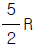
(Ｒ : 기체상수)이다. 정용열용량은?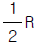
- Ｒ
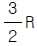
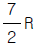
(정답률: 알수없음)
30. 14.2g의 NaSO(분자량 = 142)와 10.4g의 BaCl2(분자량 =208)를 반응시켜 BaSO4(분자량 = 233) 10g을 얻었다. 수율은 얼마인가?
- 0.429
- 0.961
- 0.858
- 0.734
(정답률: 알수없음)
31. 묽은황산(조성 20%) 100kg에 조성 80%의 진한 황산을 섞어서 50%의 황산수용액을 만들고자 할 때 진한황산(80%)의 필요한 량[kg]은 얼마인가?
- 100
- 120
- 140
- 160
(정답률: 알수없음)
32. 다음 중 1.5 x 106 dyne에 해당하는 값은?
- 4.17 Newton
- 1500 Newton
- 15 Newton
- 1530 Newton
(정답률: 알수없음)
33. 200g의 H2O 에 Na2SO4(g)이 녹아 있는 용액을 냉각하여 100g의 Na2SO4.10H2O을 결정으로 석출시켰다. 모액(morther liquor)의 Na2SO4 조성은(wt%) 약 얼마인가? (단, 분자량 Na2SO4 = 142)
- 56%
- 23%
- 35%
- 28%
(정답률: 알수없음)
34. 아르곤기체(원자량 : 40)의 정적비열은 2.98㎈/g㏖℃이다. 이것을 J/gK로 표시하면 그 값은?
- 0.018
- 0.71
- 0.046
- 0.313
(정답률: 알수없음)
35. 247 psia ,140℉ 순수 과열암모니아 증기(엔탈피 657.7Btu/hr )가 응축기로 유입되어 110℉ 포화액체 암모니아(엔탈피 167 Btu/hr)로 응축되어 정상적으로 배출될 때 열 방출속도(kCal/hr)는?
- 4.24 x 105
- 5.24 x 105
- 3.24 x 105
- 1.24 x 105
(정답률: 알수없음)
36. 부피%로 아세톤 15%를 함유하는 벤젠과의 혼합물이 있다. 20℃,760㎜Hg에서 벤젠의 분압은 얼마인가?
- 0.15atm
- 0.85atm
- 700mmHg
- 500mmHg
(정답률: 알수없음)
37. 어떤 물질의 한 상태에서 온도(To)가 dew point 온도(Tdp)보다 높은 상태는 다음의 어떤 상태를 의미하는가?
- 포화
- 과열
- 과포화
- 임계
(정답률: 알수없음)
38. 여과속도가 5.0L/min 일때 여과량이 1.5L였고, 여과속도가 2.0L/min 일때는 여과량이 18.0L였다면, 여과속도가 2.5L/min 였을때는 여과량이 몇 L 나 되겠는가?
- 8.5
- 9.5
- 10.5
- 11.5
(정답률: 알수없음)
39. Petit-Dulong의 법칙에 대한 설명중 옳은 것은? (단,원자량이 40 이상인 경우)
- 온도가 증가하면 열용량 감소한다.
- 절대 영도에서는 열용량은 0이 된다.
- 온도가 감소하면 열용량도 감소한다.
- 결정성 고체원소의 정용원자 열용량은 일정하다.
(정답률: 알수없음)
40. 물의 기화열은 100℃, 1기압에서 2255J/g이다. 물 1mol이 1기압에서 증발할 때 엔트로피 변화를 얼마인가?
- 22.55J/K
- 108.8J/K
- 125.3J/K
- 4⑤90J/K
(정답률: 알수없음)
3과목: 단위조작
41. 추출시 상접점(plait point)에 대한 설명으로 옳은 것은?
- 상접점에서는 두 상의 조성이 같다.
- 상접점은 온도와 압력에 무관하게 존재한다.
- 상접점에서는 대응선이 존재한다.
- 상접점에서는 두 상의 조성이 다르다.
(정답률: 알수없음)
42. 뉴톤유체가 관속을 흐를 때 관중심으로 부터 거리 r 점에서 전단응력 τ 는?
- r 에 비례한다.
- r 에 반비례한다.
- r 과 무관하다.
- r2 에 비례한다.
(정답률: 알수없음)
43. 습기가 있는 재료 10kg 을 건조시킨 다음 무게를 측정한 결과가 8.5kg 이었다면 처음 재료의 함수율은?
- 0.15kg-H2O/kg-건조고체
- 0.18kg-H2O/kg-건조고체
- 1.5kg-H2O/kg-건조고체
- 1.8kg-H2O/kg-건조고체
(정답률: 알수없음)
44. Flash distillation 에서 아래 그림과 같은 상태에서 평형 상태를 이루고 있을 때 Material Balance 를 구한 식은?
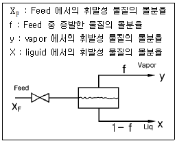
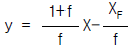
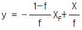
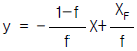
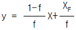
(정답률: 알수없음)
45. 어떤 일정한 온도에서 Raoult의 법칙을 따르는 다성분계 혼합물이 기-액 평형에 있다. 이 혼합물의 전압은 P이고 x와 y는 각각 액상과 기상에서의 몰분율을 나타낸다. pi와 pj를 각각 i와 j성분의 순수한 증기압이라고 할 때, j성분 대한 i성분의 상대휘발도 α ij 는 얼마인가?
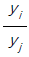
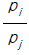
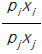
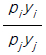
(정답률: 알수없음)
46. 단탑식 증류탑 효율에서 Murphree 효율의 정의를 옳게 나타낸 것은? (단, Yn: n 단을 나가는 실제농도 ,
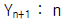
단에 들어가는 실제 농도,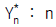
단의 하강관을 나가는 액체와 평형을 이루는 증기의 농도)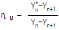
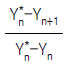
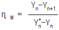
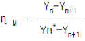
(정답률: 알수없음)
47. 고점도를 갖는 액체를 혼합하는데 가장 적당한 교반기는?
- 공기(air) 교반기
- 터빈(turbine) 교반기
- 프로펠러(propeller) 교반기
- 나선형(helical) 교반기
(정답률: 알수없음)
48. 다음 중 Raoults law 에 잘 따르는 이상용액에 해당되지 않는 계는?
- 벤젠-톨루엔계
- 아세톤-클로로포름계
- 메탄올-에탄올계
- 메탄-에탄계
(정답률: 알수없음)
49. 다음 중 x - y 곡선과 조작선을 사용하여 이론단수를 구하는 방법은?
- 판숀-사비리법(ponchon-Savarit)
- 멕케이브 티일레법(McCabe-Thiele)
- 래이레이법(Rayleigh)
- 헨스크법(Fenske)
(정답률: 알수없음)
50. 회색체의 면 A1 과 면 A2 의 복사율이 ε 1과 ε 2 일 때 비전도성 재복사벽이 존재한 경우라면 다음과 같은 식으로 표현될 수 있다. 이 때 만일 내화벽이 없다면 식은 어떻게 되겠는가? (단, : 재복사벽을 가진 상태의 보기인자 F12 : 보기인자)
(정답률: 알수없음)
51. 가로 5cm, 세로 20cm 인 직사각형 관로의 상당직경을 구하면?
- 16cm
- 12.5cm
- 8cm
- 4cm
(정답률: 알수없음)
52. 증발관의 증발능력을 작게하는 요인이 되는 것은?
- 용액의 농도가 낮을 때
- 전열 면적이 클 때
- 비등점 상승
- 총괄열전달계수가 클 때
(정답률: 알수없음)
53. 편류(Channeling)현상을 방지하기 위한 수단으로 옳지 않은 것은?
- 링과 같은 가지런한 충전물을 불규칙 충전한다.
- 탑경과 충전물의 지름 비를 최소 8 : 1 정도로 한다.
- 충전부의 적당한 위치에 액체 재분배기를 설치한다.
- 충전탑의 높이를 증가시킨다.
(정답률: 알수없음)
54. 식초산 40(w%)의 수용액 150(kg)을 25(℃)에서 벤젠 100(kg)으로 1회분 평형추출할 경우 혼합점(M)에서 추출상, 추잔상이 용해도곡선상에 MR:EM=3 : 2로 분리될 때 추출액량(E)은 얼마인가?
- 50kg
- 100kg
- 150kg
- 200kg
(정답률: 알수없음)
55. 향류 다단 추출에서 추제비를 3, 단수를 4로 조작할 때의 추출율은?
- 0.9887
- 0.9917
- 0.9936
- 0.9949
(정답률: 알수없음)
56. 비중이 0.945, 점도가 0.9cP 인 액체가 안지름이 2인치, 길이가 1㎞ 인 파이프속으로 3㎝/sec 의 속도로 흐를 때 Fanning 마찰계수의 값은?
- 0.0015
- 0.015
- 0.01
- 0.1
(정답률: 알수없음)
57. 완전 복사체로부터 에너지 방사속도를 나타내는 식은? (단, q/A : 단위면적당 전열량, σ : 스테판-볼쯔만상수 T : 온도)
- q/A = σ T2
- q/A = σ /T
- q/A = σ T
- q/A = σ T4
(정답률: 알수없음)
58. 유체가 평판위를 층류로 흐를 때 대류 열전달의 국부 NNux(local NNu)는 NNux = a(NRex)1/2로 표현된다. 이 때 평균 NNum의 값은? (단, a:상수, NNux:국부NNu, NRex:국부NRe)
- 2a2 (NRex)1/2
- 2a (NRex)1/2
- a2 (NRex)1/2
(정답률: 알수없음)
59. 열전달 및 물질전달계수에 관계되는 Colburn J factor 는 무엇의 함수인가?
- NSh
- NNu
- NRe
- Nsa
(정답률: 알수없음)
60. 침강조작의 경우 난류영역에서 구형입자의 자유침강이 발생할 때 적용할 수 있는 법칙은?
- Newton 법칙
- Stokes 법칙
- Allen 법칙
- Fourier 법칙
(정답률: 알수없음)
4과목: 반응공학
61. 과산화수소(H2 O2 )를 촉매를 이용하여 회분식 반응기에서 분해시켰다. 분해반응이 시작된 t분 후에 남아있는 H2 O2의 양을 KMnO4 표준용액으로 적정한 결과는 다음 표와 같다. 이 반응은 몇 차 반응이겠는가?
- 0차 반응
- 1차 반응
- 2차 반응
- 3차 반응
(정답률: 알수없음)
62. 반응물 A가 회분 반응기에서 비가역 2차 액상반응으로 분해하는데 5분 동안에 50%가 전화되면 75% 전화에 걸리는 시간은?
- 5분
- 10분
- 15분
- 20분
(정답률: 알수없음)
63. N2O2 의 1차 반응속도 상수는 0.345/min 이고 반응초기의 농도 CA0 가 2.4 ㏖/ℓ 이다. N2O2 의 농도가 0.9 ㏖/ℓ 될 때까지의 시간은?
- 1.84 min
- 2.84 min
- 3.84 min
- 4.84 min
(정답률: 알수없음)
64. 촉매의 세공부피 측정을 위하여 일정한 용기내에 촉매(고체)시료 101.5g 을 완전히 밀폐용기에 넣고 낮은압력에서 수은을 주입하여 부피를 측정한 결과 48.6㎝3 이었으며, 다시 수은을 제거한 후 He 을 주입한 결과 90.7㎝3 이었다 이 때 촉매의 단위 g 당 세공부피는?
- 0.115㎝3/g
- 0.215㎝3/g
- 0.315㎝3/g
- 0.415㎝3/g
(정답률: 알수없음)
65. 0차 반응의 반응물 농도와 시간간의 관계를 바르게 나타낸 것은?
(정답률: 알수없음)
66. 다음 중 복합반응이 아닌 것은?
- 연계반응(series reaction)
- 병렬반응(parallel reaction)
- 중합반응(polymerization)
- 자동 촉매반응(Atocatalytic reaction)
(정답률: 알수없음)
67. 다음 그림과 같은 반응에서 열효과는?
- 30cal 흡열
- 50cal 흡열
- 30cal 발열
- 50cal 발열
(정답률: 알수없음)
68. 표준반응열(△H° )이 생성물의 표준생성열[(△Hf)P]과 반응물의 표준 생성열[(△Hf)R] 사이와의 관계는?
- △H° = Σ (△Hf)R - Σ (△Hf)P
- △H° = Σ (△Hf)P - Σ (△Hf)R
- △H° = Σ (△Hf)R × Σ (△Hf)P
- △H° = Σ (△Hf)P + Σ (△Hf)R
(정답률: 알수없음)
69. 다음 반응이 1atm, 25℃ 에서 일어날 때 자유에너지 변화는 얼마 인가? (단, 각각의 생성깊스 에너지변화 △G fo 값은 CO(g)가 - 32.807kcal/gㆍmol 이고 C02(g)는 - 94.2598 ㎉/gㆍmol)
- - 61.4528 ㎉/gㆍ mol
- - 127.0668 ㎉/gㆍ mol
- 127.0668 ㎉/gㆍ mol
- 61.4528 ㎉/gㆍ mol
(정답률: 알수없음)
70. 아래 그림의 반응기 중 이상 회분식(batch) 반응기는? (단, A, B는 반응물이다.)
- ⒜ 조성변함
- ⒝ 체적과 조성변함
- ⒞ 체적변화나 조성변화하지 않음
- ⒟ 체적은 일정하나 조성변함
(정답률: 알수없음)
71. A → R, rR = : 원하는 반응, A → S, rS = : 원하지 않는 반응일 때 R을 더 많이 얻기 위한 방법은?
- a1 = a2 일 때는 두 반응의 반응속도가 같다.
- a1 > a2 일 때는 A의 농도를 높이는 것이 좋다.
- a1 < a2 일 때는 R을 더 많이 얻을 수 없다.
- 반응속도는 R와 S의 상대적 생성량에는 관계 없다.
(정답률: 알수없음)
72. 4 PH3 → P4+ 6H2 로 분해하는 속도가 1x 10-4 mol/ℓ s일 때 수소의 생성속도(mol/ℓ s)는?
- 5 x 10-2
- 1.0 x 10-3
- 1.5 x 10-4
- 2.0 x 10-5
(정답률: 알수없음)
73. A + R → R + R 의 반응에서 양론비로 반응물을 유입시켰을 때 환류반응기에서의 시간(t)에 따른 전화율(XA) 의 변화를 나타낸 것은?
(정답률: 알수없음)
74. 메탄(CH4)과 염소(Cl2)를 반응시켜서 사염화탄소(CCl4)를 얻는 반응은?
- 단일반응
- 연속반응
- 병행반응
- 연속병행반응
(정답률: 알수없음)
75. A → 3R 인 반응에서 계의 부피변화율(ε )은 얼마인가?
- 1
- 2
- 0.5
- 1.5
(정답률: 알수없음)
76. 동일 조업조건, 일정밀도와 등온, 등압하 CSTR과 PFR에서 반응이 진행될 때 반응기 부피를 바르게 설명한 것은?
- 반응차수가 0보다 크면 PFR부피가 CSTR보다 크다.
- 반응차수가 0이면 두 반응기 부피가 같다.
- 반응차수가 커지면 CSTR부피는 PFR보다 작다.
- 반응차수와 전화율은 반응기 부피에 무관하다.
(정답률: 알수없음)
77. A → B R 인 복합반응의 회분조작에 대한 삼각표를 옳게 나타낸 것은?
(정답률: 알수없음)
78. 균일계 액상 병렬반응이 다음과 같을 때 R 의 순간수율 ø 는?
(정답률: 알수없음)
79. 액상순환반응(A → P, 1차)의 순환율이 ∞ 일 때 총괄 전화율은?
- 관형흐름 반응기의 전화율 보다 크다.
- 완전혼합 반응기의 전화율 보다 크다.
- 완전혼합 반응기의 전화율과 같다.
- 관형흐름 반응기의 전화율과 같다.
(정답률: 알수없음)
80. 다음 중 평행반응(parallel reaction)인 것은?
- A → R, B → S
- A → R, R → S
- A → R → S
- A + B → R, R + B → S
(정답률: 알수없음)
5과목: 공정제어
81. G(s) = exp(-τ S)인 계의 주파수 응답에 있어서 진폭비(AR)와 위상각(φ )는 각각 얼마인가?
- AR = 1, φ = -ω τ
- AR = τ ω , φ = tan-1(ω τ )
- AR = 0, φ = 0
(정답률: 알수없음)
82. 함수 e-bt 의 라플라스 함수는?
- e-bs
- s+b
(정답률: 알수없음)
83. 총괄전달함수가 인 계의 최종 주파수 응답에 있어 진폭비는? (단, radian frequency(w) = 2[rad/sec])
(정답률: 알수없음)
84. 다음 그림에 대응하는 라플라스 함수는?
(정답률: 알수없음)
85. characteristic equation이 S4+3S3+5S2+4S+2 = 0일 때 Routh criterion으로 stability를 판정한 것으로 옳은 것은?
- stability
- unstably
- oscillation
- 알수없다.
(정답률: 알수없음)
86. Q=C√H 로 나타나는 식을 정상상태(Hs) 근처에서 선형화한다면 어떻게 되는가? (단, C는 비례정수)
(정답률: 알수없음)
87. 전달함수(Transfer Function)의 성질은?
- 입력함수와 전달함수로 부터 출력함수를 알수 있게 된다.
- 어떤계의 특성을 표현하는 식으로서 그 계가 1차계라면 1차식으로 나타난다.
- 방정식을 풀 때 적분법을 써서 미분방정식을 간단히 하는 함수이다.
- 전달함수로부터 그 계의 특성을 알수 있고 이 함수를 출력함수로 나누면 입력함수가 된다.
(정답률: 알수없음)
88. 그림은 무엇을 나타내는가? (단,ℓ : 이동거리,㎝, V : 이동속도,㎝/sec)
- CR회로의 동작응답
- 용수철계의 응답
- 데드타임의 공정응답
- 적분요소의 계단상 응답
(정답률: 알수없음)
89. Nyquist 선도의 임계점(-1,0)에 대응되는 보오드 선도상에 있어서 이득과 위상은?
- 1[㏈],o[㏈]
- 0[㏈],o[㏈]
- 0[㏈],-180[㏈]
- 1[㏈],180[㏈]
(정답률: 알수없음)
90. 다음의 block diagram으로 나타낸 제어계가 안정하기 위한 조건은?
- Kc < 13.7
- Kc < 14.6
- Kc < 10.4
- Kc < 16.5
(정답률: 알수없음)
91. 다음 블록선도에서 M은 무엇인가?
- 측정변수
- 조절변수
- 제어변수
- 외란
(정답률: 알수없음)
92. X(S) = 1/[S(S2 + 2S +3)]일 때 의 값은?
- 0
- 1/3
- 1
- 3
(정답률: 알수없음)
93. 다음 2차계에서 무진동 감쇄(over damped)는?
- ξ > 1
- ξ < 1
- ξ = 1
- ξ = 0
(정답률: 알수없음)
94. 1차계로 작동하는 수은 온도계 시간 상수는 다음 중 어느 것인가? (단, h : film coefficient, Cp : heat capacity of Hg, A : surface area, m : mass of Hg)
- hA/mCp
- hm/ACp
- mA/hCp
- mCp/hA
(정답률: 알수없음)
95. 다음 중 제어 시스템을 구성하는 주요 요소가 아닌 것은?
- 측정장치
- 제어기
- 외부교란변수
- 제어밸브
(정답률: 알수없음)
96. 어떤 공정을 이득(gain)이 2인 비례제어기 (Proportional(P) controller)를 달아서 운전하고 있다. 이때 공정출력이 주기 3으로 계속 진동하고 있다. 다음 설명 중 맞는 것은?
- 이 공정의 최종이득(Ultimate gain)은 2 이고 최종주파수(Ultimate frequency)는 3이다.
- 이 공정의 최종이득(Ultimate gain)은 2 이고 최종주파수(Ultimate frequency)는 1/3 이다.
- 이 공정의 최종이득(Ultimate gain)은 1/2 이고 최종주파수(Ultimate frequency)는 3 이다.
- 이 공정의 최종이득(Ultimate gain)은 1/2 이고 최종주파수(Ultimate frequency)는 1/3 이다.
(정답률: 알수없음)
97. 액의 탱크에서의 설명 중 맞는 것은?
- 단면적이 커지면 시상수가 커진다.
- 단면적이 작아지면 시상수가 커진다.
- 출구저항이 작아지면 시상수가 커진다.
- 시상수는 출구저항과는 무관하다.
(정답률: 알수없음)
98. 다음 중 역응답(inverse response)을 보이는 공정은?
(정답률: 알수없음)
99. 전달함수 인 2차 제어계의 시정수 τ 와 상수 ξ (damping ratio)의 값은?
- τ = 0.5,ξ = 0.8
- τ = 0.8,ξ = 0.4
- τ = 0.4,ξ = 0.5
- τ = 0.5,ξ = 0.4
(정답률: 알수없음)
100. 다음 중 측정 가능한 외란 (measurable disturbance)을 효과적으로 제거하기 위한 제어기는?
- 앞먹임 제어기 (Feedforward Controller)
- 되먹임 제어기 (Feedback Controller )
- 스미스 예측기 (Smith Predictor)
- 다단 제어기 (Cascade Controller)
(정답률: 알수없음)
6과목: 화학공업개론
101. 용융상 실리콘영역을 다결정 실리콘 봉을 따라 천천히 이동시키면서 다결정 실리콘 봉이 단결정 실리콘으로 성장되도록 하는 것은?
- 초크랄스키법(CZ법)
- 플롯롤법(FZ법)
- 냉각도가니법
- 경사냉각법
(정답률: 알수없음)
102. 건전지에 대한 설명이다. 틀린 것은?
- 용량을 지배하는 원료는 이산화 망간이다.
- 아연의 자기방전을 감축하기 위하여 전해액을 중성에 접근시킨다.
- 전해액에 부식을 방지하기 위하여 소량의 ZnCl2을 첨가한다.
- 아연은 양극에서 염소 이온과 반응하여 ZnCl2가 된다.
(정답률: 알수없음)
103. 소다회 제조에서 조중조의 침전 모액 중의 암모니아는 증류탑에서 회수하는데 이 때 쓰이는 물질은?
- NaCl을 가한다.
- Ca(OH)2를 가한다.
- Ba(OH)2를 가한다.
- 가열 조작만으로도 충분하다.
(정답률: 알수없음)
104. 염화수소 가스를 물 100㎏에 용해시켜 35%의 염산용액을 만들려고 한다면 이 때 염화수소는 몇㎏이 필요한가?
- 23.8㎏
- 33.8㎏
- 43.8㎏
- 53.8㎏
(정답률: 알수없음)
1⑤. 다음 질소 비료 중 염기성 비료로서 산성토양의 개량에 맞는 것은?
- Urea
- NH4Cl
- CaCN2
- 황산암모늄
(정답률: 알수없음)
106. NH3 + 2O2 HNO3 + H2O의 반응에서 1m3의 NH3를 산화시키는데 필요한 공기량은? (단, N2 = 79%, O2 = 21%)
- 25.9m3
- 24.5m3
- 20m3
- 9.5m3
(정답률: 알수없음)
107. SO2가 SO3로 변화할때 생성되는 반응열은 얼마인가? (단,Δ Hf의 SO2는 -70.96㎉ ㏖-1,SO3는 -94.45㎉ ㏖-1)
- 약 -44㎉ ㏖-1
- 약 -34㎉ ㏖-1
- 약 -24㎉ ㏖-1
- 약 -14㎉ ㏖-1
(정답률: 알수없음)
108. 벤젠을 400 - 500℃에서 Si - Al2O3담체로 한 V2O5 촉매상을 접촉 기상 산화 시킬때 주생성물은?
- 나프텐산
- 푸마르산
- 프탈산 무수물
- 말레산 무수물
(정답률: 알수없음)
109. 다음중 고분자의 수평균분자량을 측정하는 방법이 아닌것은?
- 광산란법
- 삼투압법
- 비등점상승법
- 빙점강하법
(정답률: 알수없음)
110. 에틸렌 제조의 주된 공업원료로 삼고 있는 것은 다음 어느 것인가?
- 등유
- 중유
- 경유
- 나프타
(정답률: 알수없음)
111. 염화물의 에스테르화 반응에서 제일 좋은 Schotten -Baumann(쇼텐바우만)법은?
(정답률: 알수없음)
112. 실리콘 산화에 의한 산화막 종류가 아닌 것은?
- 캐패시터 절연막
- 실리콘보호막
- 부동태막
- 게이트 절연막
(정답률: 알수없음)
113. 현재 질소질 비료인 요소는 국내의 경우 완전 순환방식의 제조 공정을 통해 생산되고 있다. 다음 중 순환법의 종류가 아닌 것은?
- Inventa Process
- Du pont Process
- Pechiney Process
- Monsanto Process
(정답률: 알수없음)
114. 다음의 배합비료로서 적당치 못한 것은?
- K2SO4
- CaCN2
- (NH4)2HPO4
- (NH4)2SO4
(정답률: 알수없음)
115. 다음 중 최종 생성물로 페놀이 얻어지지 않는 것은?
(정답률: 알수없음)
116. 니트로벤젠을 아닐린으로 되게 하는 환원제는?
- Zn + NH4Cl
- Zn + H2O
- Fe + HCl
- Zn + NaOH
(정답률: 알수없음)
117. 석유의 비탄화수소 성분중 질소 화합물은?
- 나프텐산
- 피리딘
- 나프토티오펜
- 벤조티오펜
(정답률: 알수없음)
118. 다음중 용액중합반응의 특징을 옳게 설명한 것은?
- 유화제로는 계면활성제를 사용한다.
- 온도조절이 용이하다.
- 높은 순도의 고분자물질을 얻을수 있다.
- 물을 안정제로 사용한다.
(정답률: 알수없음)
119. 인산비료에서 인함량을 나타낼때 그 기준은 통상 어느것에 의하는가?
- P
- P2O3
- P2O5
- PO4
(정답률: 알수없음)
120. 에텐(C2H4)의 부가반응에 의한 생성물은?
- HCHO
- CH3OH
- CH2 = CHCl
- CH3CH2OH
(정답률: 알수없음)